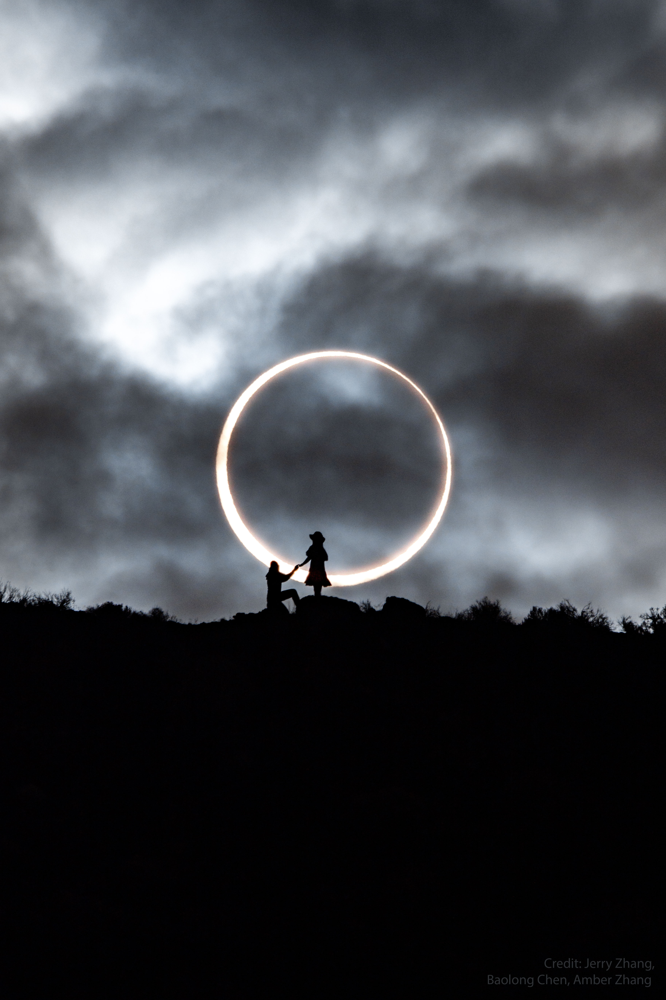

An annular solar eclipse occurs when the Moon passes directly between Earth and the Sun but appears too small to cover the solar disk completely, leaving a bright ring of sunlight visible around the Moon's silhouette. The word "annular" comes from the Latin annulus, meaning ring, and the event is popularly called the "ring of fire."

Credit: Jerry Zhang, Baolong Chen (photographer), Amber Zhang / NASA APOD
Why the ring appears
The Moon follows an elliptical orbit around Earth. When a solar eclipse coincides with the Moon near apogee (about 405,700 km away), its apparent angular diameter (~29′26″) is smaller than the Sun's (~31′28″ to 32′42″). The Moon simply cannot blot out the entire photosphere, so a ring of sunlight remains. Because the Moon's average apparent size is about 2.1% smaller than the Sun's, roughly 60% of all central solar eclipses are annular rather than total.
The antumbral shadow
Observers who see the ring of fire are standing in the antumbra, the extension of the Moon's shadow cone beyond its tip. From within the antumbra the Sun appears larger than the Moon, which sits as a dark disk inside the bright ring. This contrasts with the umbra, where a total eclipse occurs, and the wider penumbra, where only a partial eclipse is visible.
The antumbral shadow sweeps west to east across Earth's surface at roughly 1 to 3 km/s. The path is typically 100 to 300 km wide, often wider than the umbral track of a total eclipse because the antumbra expands with distance beyond the shadow tip. Annularity (the time between second and third contact, when the Moon is fully on the solar disk) can last from under one second to a maximum of 12 minutes 29 seconds, depending on the Moon's distance and the observer's position along the path.
Viewing safety
Unlike a total eclipse, the Sun is never fully blocked during annularity, so the photosphere remains dangerously bright. Eclipse glasses or a solar filter must be worn throughout. Annularity can also be observed safely through a pinhole projector or a welder's glass of shade 14 or higher.
Hybrid eclipses
A hybrid eclipse shifts between annular and total phases along its path. Earth's curvature means that some observers stand just within the umbral tip and see totality, while others a little farther along the track fall just beyond it and see a ring. Hybrid eclipses are rare, making up about 5% of central eclipses.
Frequency and recent examples
Annular eclipses occur roughly once every one to two years somewhere on Earth, though many tracks cross ocean or polar regions. The October 14, 2023, eclipse was visible from Oregon to Texas and through Central and South America, the first annular eclipse over the contiguous United States since May 20, 2012. Upcoming annular eclipses include February 17, 2026 (Antarctica) and February 6, 2027 (Africa and South America).